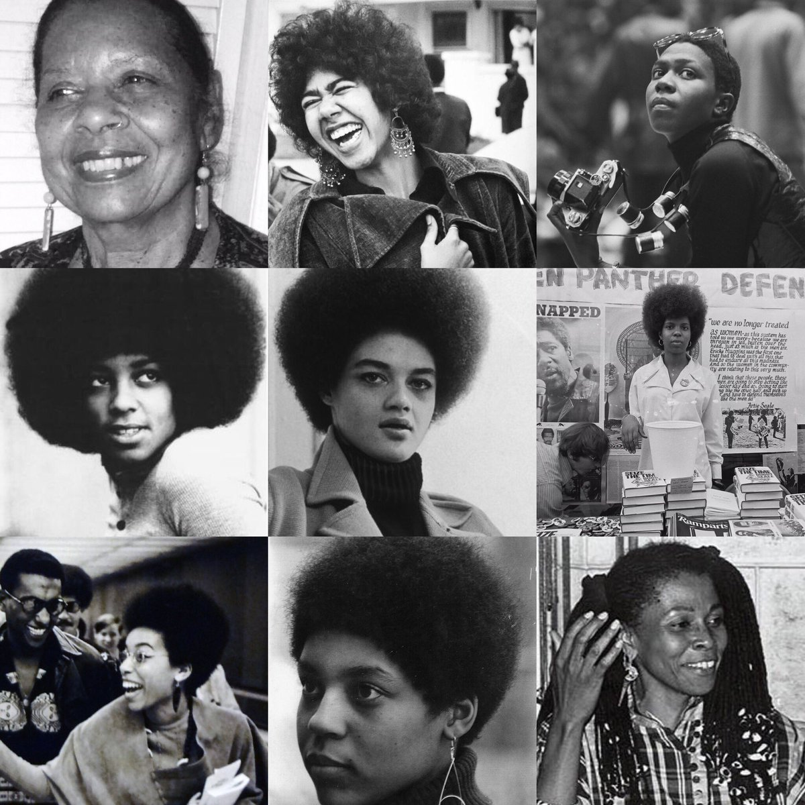
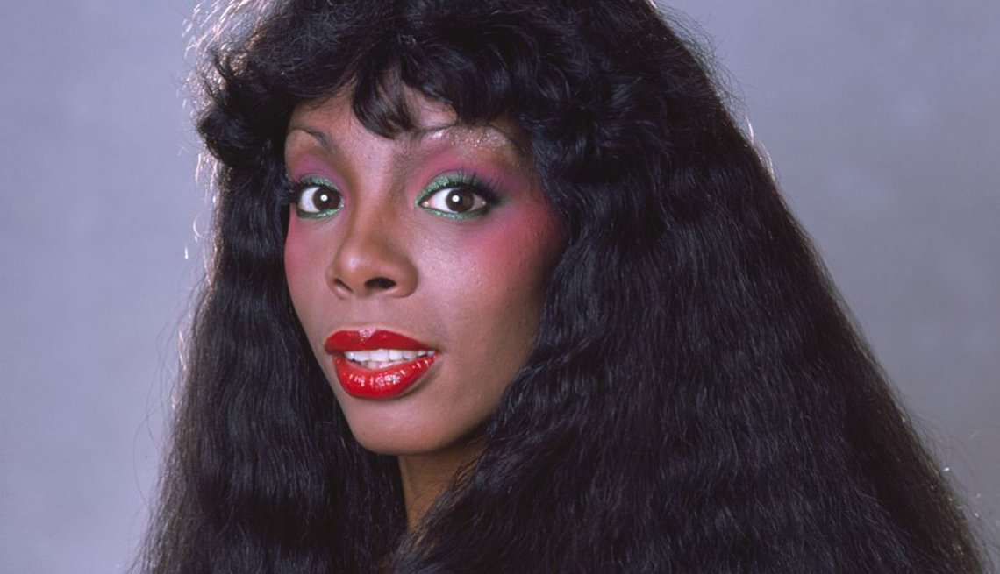
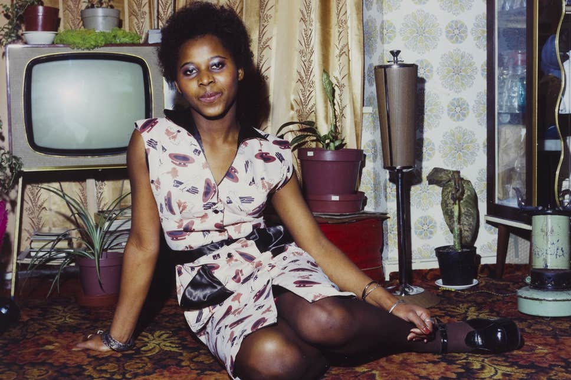

TIMES ARE CHANGING
1970s
Hey! This is a very rough draft of a scrollable timeline. I know I had a different plan to work with horizontal panels originally but I wanted to get creative with this concept considering I had just learned about working with perspective motion. Let me know what you think! I eat feedback for lunch.
1980s
Pro tip! You can move the cursor around and side to side to change the timeline's perspective. At some point I'll add in a freeze frame and make the images clickable. That way, users can get more information through text expansion.
1990s
I'm listening to french rap music right now. They like to complain about the economy a lot which is weird to me because I thought things were doing pretty good over there money wise. I wouldn't know, I'm not a big fan of France. Judging by their racial tensions, I don't think they're a big fan of me either.
2000s
You've reached the end! Hope this was a fun experience. I get a lil dizzy when I stare at this page for too long.